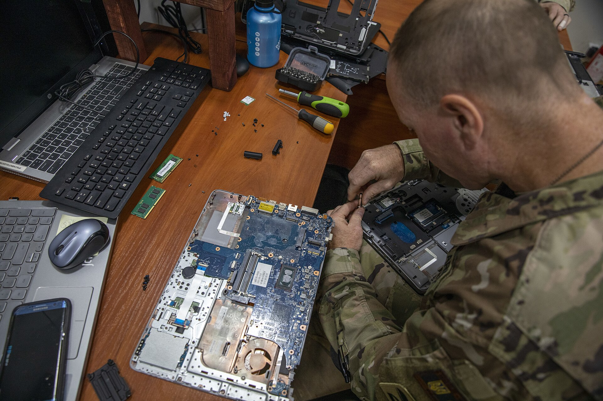

Заявка
Заявка по телефону или через форму. Фиксируем модель, комплектность и симптомы — это ускоряет диагностику.
index / diagnostics
Диагностика — сердце нашей работы. Мы не меняем детали наугад: сначала устанавливаем причину, потом согласуем смету и только затем берём паяльник. Ниже — настоящая последовательность этапов.
Важно: мы не обещаем «гарантированное восстановление любых устройств» — если диагностика покажет неремонтопригодность, вы забираете устройство и платите только за диагностику.
Этапы идут строго по порядку — переход к следующему возможен только после закрытия предыдущего.
Заявка по телефону или через форму. Фиксируем модель, комплектность и симптомы — это ускоряет диагностику.
Проверка по 24 точкам: питание, плата, память, накопитель, охлаждение, программная среда.
Присылаем протокол и смету: что входит в цену, что оплачивается отдельно. Без вашего «да» работы не начинаются.
Работаем на антистатическом рабочем месте, исходные детали храним до выдачи.
Контрольный прогон: стресс-тест, температурные замеры, стабильность памяти и диска в течение часа.
Выдаём устройство, чек работ и гарантийный талон. Показываем протокол проверки.
База из 14 пунктов расширяется до 24 в зависимости от симптомов: например, при перегреве добавляются температурные замеры под нагрузкой и проверка термопрокладок.
Бейджи выше — демонстрация статусов, которые вы видите по своему заказу.
Перед выдачей каждый заказ проходит цепочку статусов — вы видите текущий статус по номеру телефона.
Устройство на стенде, идёт сбор данных по точкам проверки.
Смета готова и отправлена вам. Ждём подтверждения объёма работ.
Работы подтверждены, мастер выполняет их на своём рабочем месте.
Контрольный прогон пройден. Устройство можно забрать или получить доставкой.
По результатам вы получаете короткий протокол: что проверено, что обнаружено, варианты ремонта и цена каждого. Этого достаточно, чтобы принять решение без визита в мастерскую.
Цены на диагностику
Опишите симптомы — подскажем, на что укажет диагностика и сколько это стоит.